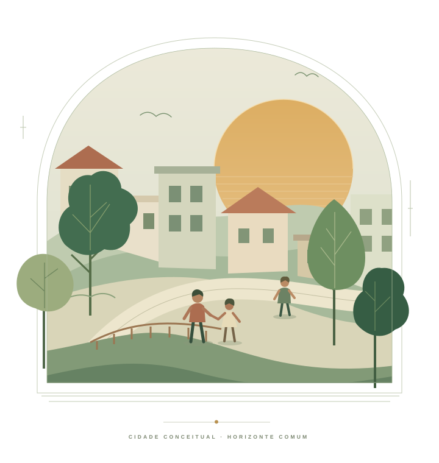

Faça uma pausa
Escolha uma leitura que converse com o momento. Observe o contexto e preserve sua liberdade de interpretar.
Explorar a biblioteca ↗SOBRAL, CEARÁ · COMUNIDADE EM PRIMEIRO LUGAR
Um projeto cívico e social para fortalecer a comunidade. Ideias com propósito, reflexão com liberdade e pequenos gestos que fazem o bem acontecer.
Uma comunidade mais humana se constrói
com respeito, escuta e participação.

01 / A PROPOSTA
O PLANO D nasceu para organizar, fortalecer e impulsionar o desenvolvimento coletivo da população sobralense, com visão de longo prazo.
Este espaço aproxima essa intenção de uma prática cotidiana: refletir antes de agir, ouvir quem precisa e transformar boas ideias em atitudes responsáveis.
A biblioteca abaixo é uma contribuição educativa para essa caminhada. As iniciativas cívicas acolhem pessoas de qualquer crença ou sem religião.
02 / BIBLIOTECA DE REFLEXÃO
Para os desafios da vida real, uma pausa que ajuda a escolher com cuidado.
24 leituras · 6 temas · sem sequência obrigatória
Acervo autoral de inspiração católica. Leia o resumo aqui e aprofunde no site de origem, no seu ritmo.
Experimente outra palavra ou escolha outro tema.
Tente recarregar a página ou visite o acervo de origem.
Abrir o acervo completo ↗♡ Seus favoritos ficam apenas neste navegador.
03 / DO PENSAMENTO À ATITUDE
Você pode começar pelo que cabe no seu dia. Sem pressa, sem exposição, com respeito à sua realidade.
Escolha uma leitura que converse com o momento. Observe o contexto e preserve sua liberdade de interpretar.
Explorar a biblioteca ↗Escute uma necessidade real. Ofereça uma ajuda possível, respeitando limites, autonomia e dignidade.
Conhecer iniciativas sociais ↗Organize uma proposta de reflexão. A oficina do acervo prepara um rascunho local para você revisar e guardar.
Abrir a oficina de ideias ↗CLAREZA TAMBÉM É CUIDADO
Autoria, fontes e limites visíveis.
As referências usam a Almeida de 1911, na transcrição do Project Gutenberg, eBook 62383. Os resumos são aplicações autorais. O samurai é uma metáfora contemporânea de disciplina e domínio próprio. Consulte o contexto completo na leitura de origem.
Consultar a edição bíblica ↗Idealização e manutenção do acervo: Aldenir Rocha de Oliveira Filho. A origem informa preparação dos textos e da arte com assistência de inteligência artificial. A revisão teológica independente permanece pendente.
Este catálogo reúne a edição 0.3.0, de 16/09/2026. As páginas externas podem receber atualizações; o catálogo não tem sincronização automática. Os direitos do conteúdo de origem foram preservados.
Consultar procedência e hashes ↗O site não possui conta, formulário de envio ou análise de audiência. A busca acontece nesta página e os favoritos ficam no armazenamento deste navegador. Links externos abrem outros sites, sujeitos às políticas de seus responsáveis. A ajuda e a participação cívica não dependem de adesão religiosa.